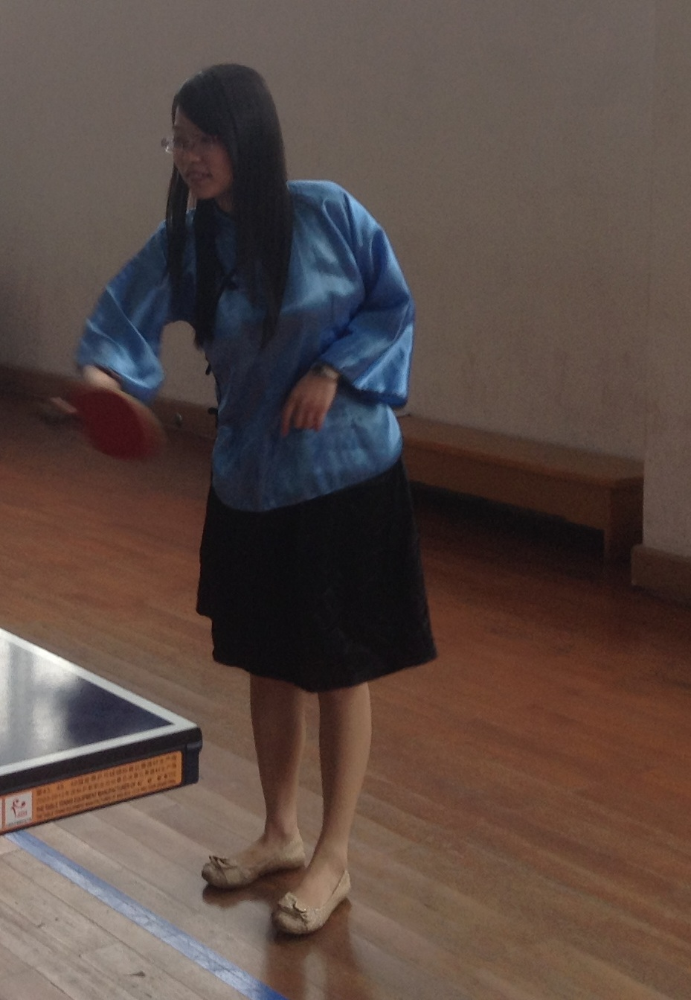
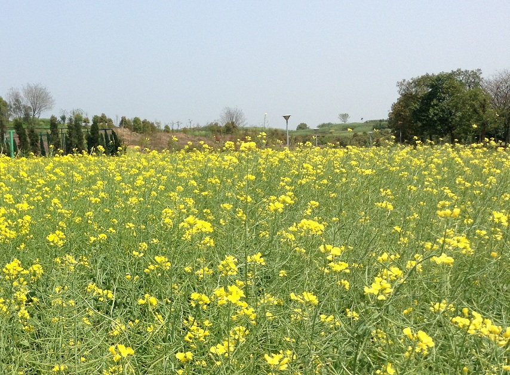
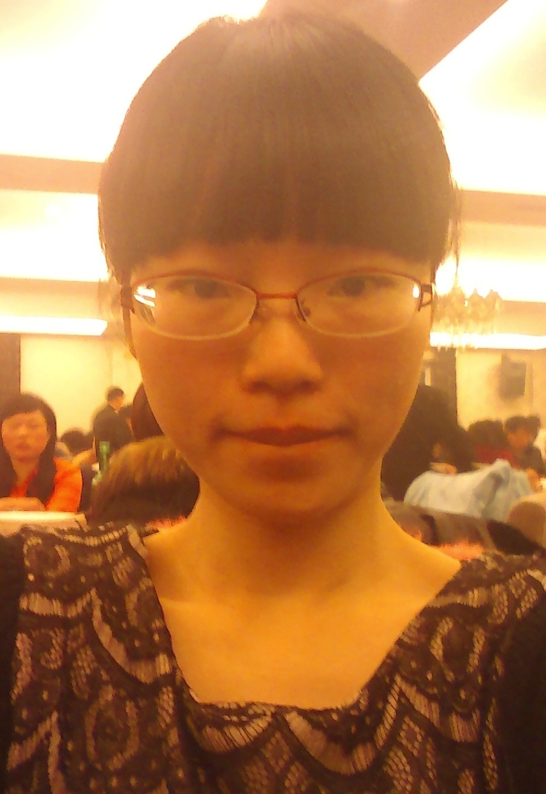
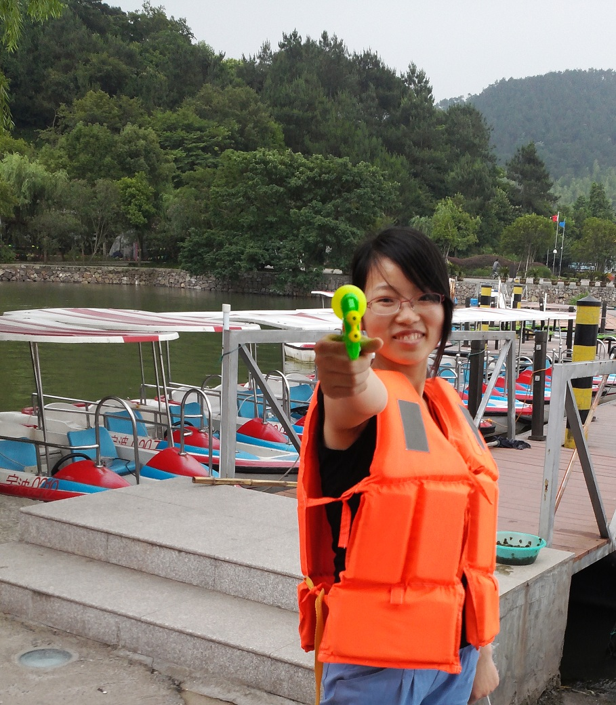
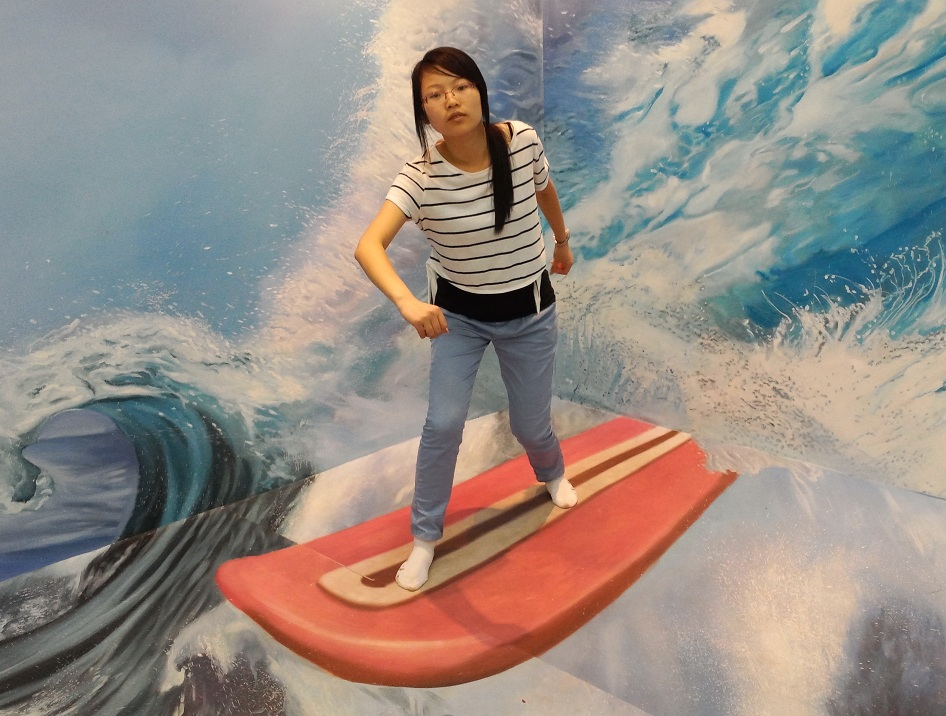

Our life is not only working or studying, but also entertainment. That's why we have hobbies. Some hobbies can enrich our experience, some can make friends, while others can broaden our horizon.
I have several hobbies that make my life colorful and meanful. I will tell you one by one. Find what you love and enjoy your life.
Table Tennis
All of my friends know that I'm crazy about playing ping-pong. It is such a popular sport that almost everyone can play, but not for girls. I've no idea why I love it so much. I played since middle school.
It can not only keep you physical healthy, also can make friends. I got aquaintance with lots of people because of that, including my BF. Girls, if you are finding your dating partner, go to the gym.
Photography
I like to hold a moment with my cell phone. Human beings tend to have a bad memory since we are so busy living a life. So it is a good way to make memory longer.
The second season is that I enjoy the beautiful things. I will not miss a chance to take photo of beautiful things.
I have to admit that I, myself, like to be photographed. When I am too old to walk, I will hold those photos talking to my lover in the chair "How pretty I was when young! Now, I am that old and ugly.... "
If nobody is available here helping taking my photo, I will take it myself. Ok, I like selfie . Let's enjoy one of my selfies.
Skating
My BF asked me to skate for many times. I was so afraid that I didn't go skating until this year. To be frank, it hurts much. I have been to the skating rink for twice. Now I can circle around the land. The masters are very cool, whom I admire so much.
Color matching
I have mentioned that I like good things. The world is full of color, which makes it very beautiful. But if we don't take the color with care, it can be extremely ugly. I am not good at it. I'm just a newbie but I'm learning.
I also like clothing matching, which includes color matching. Proper clothes will make me more beautiful. By the way, I like buying clothes like most of the girls. Oh, it should be within my budget.
Travelling
Travelling can be money-consuming and energy-consuming, why so many people like to travel around? Ask people why they date and you will know the reason.
Yeah! A succession of beautiful scenery makes one feel delighted. A long stay in the same surroundings to make everything the same.So we need travelling. It can widen our knowledge and promote our relationship with our partner. 
I travelled to Shanghai, taking part in the activity held by Fudan University. We went to see the Oriental Pearl Tower in one night. I saw the sea first time when I was travelling in Xiamen. How beautiful it was! I also found some interestin thing in the Ningbo, enjoying the painter which looked like in the 3d world. Have you seen those stuff like before?
In the spare time, I like logging qq and knowing something about friends. Weixin and Sina Weibo are also that kind of stuff. Besides, playing little games is another choice of killing time, such as flapping bird. Is that annoying? Aha~~~
Hope you can find your own hobbies that you can benefit a lot from that!